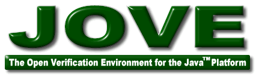

Copyright © 2005 Trevor Robinson <>. Licensed under the Open Software License version 2.0.
Product and company names mentioned herein may be trademarks of their respective owners. Java is a trademark or registered trademark of Sun Microsystems, Inc. in the U.S. or other countries.
Last updated 10/19/05
Jove is a set of Java APIs and tools to enable Verilog hardware design verification using the Java programming language. It contains components that accomplish the following:
In other words, it provides facilities similar to Synopsys Vera, Cadence Testbuilder, and (formerly) Verisity Specman.
Verification has become a very software-intensive task, and Jove is intended to leverage Java's strengths as a robust software engineering environment to deal with very large, complex verification codebases.
Jove was created at Newisys, Inc. The project was conceived and architected by Trevor Robinson <>. Jon Nall <> implemented the random solver and BitVector components, and performed most of the bring-up and testing. Scott Diesing <> implemented the behavioral simulator. Mark Davis <> managed the project. Jove also includes some third-party software, listed below.
Jove should be considered relatively stable and mature (though like most free software, it carries no warranties of any kind; see the license for details). It has been in production use for the verification of Newisys' Horus ASIC, running a verification codebase of over 400K lines of Java source, since February 2005 and has proven exceptionally stable.
Most of Jove is written in the Java 5.0 language, and should therefore work on any platform with a Java 5.0 JDK. Specifically, Java-only behavioral simulations should work on any Java platform. However, the Verilog simulator support is written in C++ and therefore tends to need tweaking to work on new platforms. The table below lists platforms that Jove has been tested on so far.
| Operating System | Processor Architecture | Supported Simulators |
|---|---|---|
| Red Hat Enterprise Linux AS 3 | Intel x86 | Synopsys VCS (32 and 64 bit versions), GPL Cver |
| Microsoft Windows XP + Cygwin 1.5.18-1 | Intel x86 | GPL Cver |
| Apple Mac OS X 10.4.2 + J2SE 5.0 Release 1 | PowerPC | GPL Cver |
Jove is designed to be easily ported to any simulator supporting PLI 2.0 / VPI. It has been tested with the simulators listed in the table below. We hope that support for other simulators will be forthcoming.
| Simulator | Status | Notes |
|---|---|---|
| Synopsys VCS | Extensively tested | Jove exposed various bugs in the VCS VPI implementation, most of which have been fixed in recent versions, so using the latest version is recommended. |
| Pragmatic C GPL Cver | Minimal testing | Tested with version 2.11a, which requires a patch to fix a bug in setting Start of Sim Time callbacks. |
Jove is licensed under the Open Software License 2.0 (see LICENSE-osl-2.0.txt in the distribution). It also includes the following third-party software:
Yes. There is a large logo:

and a small logo:
You may use these logos in product description and promotional material IF and ONLY IF such use can in no way be interpreted as anything other than an attribution. Using the Jove name and artwork in a manner that implies endorsement of a product or service is strictly forbidden.
Additionally, the large logo makes reference to the Java trademark owned by Sun Microsystems. According to the Sun Trademark and Logo Usage Requirements, its ownership must be attributed in a trademark legend "in a location typically used for copyright and other legal notices." According to their abbreviated legend template, the text would be "Java is a trademark or registered trademark of Sun Microsystems, Inc. in the U.S. or other countries." We recommend that you consult their requirements document before referencing any of their trademarks.